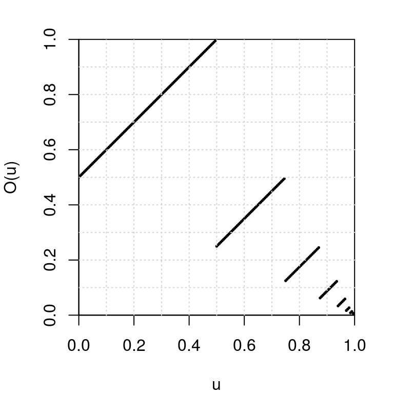
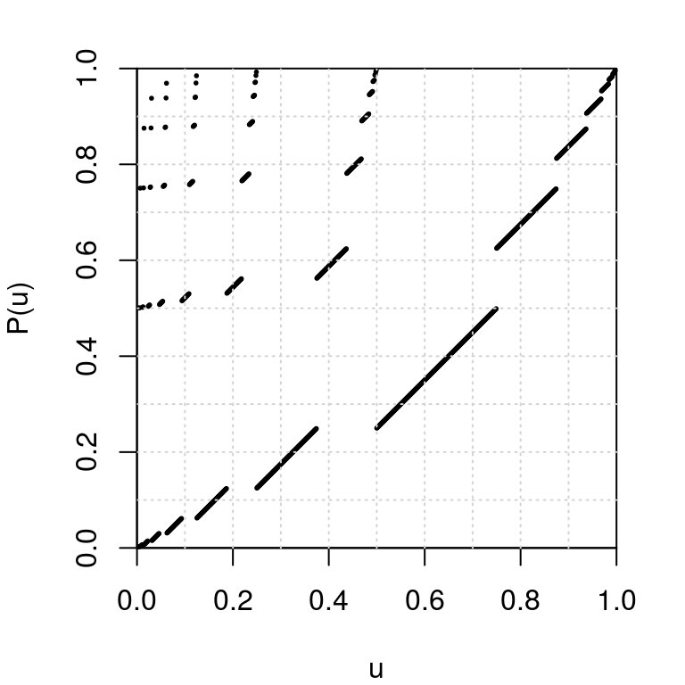

-
Dyadic expansion with R
2016-08-08
SourceWe provide a function that computes the dyadic representation of a real number in the interval \([0,1]\). Then we give an implementation of two transformations of the set \({\{0,1\}}^\mathbb{N}\) which are well-known in ergodic theory: the dyadic odometer and the Pascal transformation. For each of these transformations, we plot the graph of the conjugate transformation of \([0,1]\) obtained by the dyadic representation.
Dyadic expansion
Every real number \(u \in [0,1]\) has a dyadic expansion (or binary expansion): \[ u = \frac{\epsilon_1}{2} + \frac{\epsilon_2}{2^2} + \frac{\epsilon_3}{2^3} + \ldots \] where \(\epsilon_i=0\) or \(1\). We say that the sequence \((\epsilon_1, \epsilon_2, \ldots)\) is the dyadic representation of \(u\).
The
num2dyadicfunction below returns the dyadic representation of \(u \in [0,1]\).num2dyadic <- function(u, nmax=1024L){ out <- integer(nmax) i <- j <- 0L while(u>0 && i<nmax){ j <- 1L + max(0L,floor(-log2(u*(1+.Machine$double.eps^.5)))) if(i+j <= nmax){ i <- i + j out[i] <- 1L u <- 2L^j*u - 1L }else{ i <- nmax } } return(out[1:i]) }The
dyadic2numfunction below does the reverse action:dyadic2num <- function(d) sum(d/2L^(seq_along(d)))Let us check that the dyadic representation of \(0.75 = \frac{1}{2}+\frac{1}{4}\) is \((1,1)\):
num2dyadic(1/2+1/4) ## [1] 1 1The real number \(u=0.2\) has the infinite periodic dyadic representation \((0, 0, 1, 1, 0, 0, 1, 1, \ldots)\). The
num2dyadicfunction applied to \(0.2\) returns only the first \(54\) digits of its dyadic representation:( d <- num2dyadic(0.2) ) ## [1] 0 0 1 1 0 0 1 1 0 0 1 1 0 0 1 1 0 0 1 1 0 0 1 1 0 0 1 1 0 0 1 1 0 0 1 ## [36] 1 0 0 1 1 0 0 1 1 0 0 1 1 0 0 1 1 0 1 length(d) ## [1] 54But it makes no difference for R:
dyadic2num(d) == 0.2 ## [1] TRUEThe dyadic odometer
The dyadic odometer is the transformation \(O\) of the set \({\{0,1\}}^{\mathbb{N}}\) defined by \(O(d) = d + (1, 0, 0, \ldots)\), where “\(+\)” is the addition \(\bmod\, 2\) with carry to the right.
The
odometerfunction below is an implementation of the dyadic odometer and its inverse (optionimage="backward").odometer <- function(d, image=c("forward", "backward")){ image <- match.arg(image) if(image=="forward"){ if(all(d==1L)){ d <- c(rep(0L, length(d)), 1L) }else{ k <- which.min(d) d[1:k] <- 1L-d[1:k] } } if(image=="backward"){ if(all(d==0L)){ d <- c(rep(1L, length(d)), 0L) }else{ k <- which.max(d) d[1:k] <- 1L-d[1:k] } } return(d) }Using the dyadic representation, the odometer also defines a map from the interval \([0,1]\) to itself. We plot its graph below:
par(mar=c(4,4,2,2)) u <- seq(0, 0.995, by=0.005) Ou <- sapply(u, function(u) dyadic2num(odometer(num2dyadic(u)))) plot(u, Ou, xlab="u", ylab="O(u)", xlim=c(0,1), ylim=c(0,1), pch=19, cex=.25, pty="s", xaxs="i", yaxs="i") grid(nx=10)
The Pascal transformation
The Pascal transformation \(P\) is defined for every \(d \in {\{0,1\}}^{\mathbb{N}}\) except when \(d=000\ldots\) or when \(d\) has the form \(d=0^i111\ldots\) (\(i\geq 0\)). Such a \(d\) has the form \(d= 0^m1^k10x\) where \(m,k \geq 0\) and \(x \in {\{0,1\}}^{\mathbb{N}}\), and then the image of \(d\) by the Pascal transformation is \[ P(0^m1^k10x) = 1^k0^m01x. \] The case when \(d=0^i111\ldots\) does not occur for us since we deal with finite sequences only. One naturally extends the Pascal transformation to include the case \(d=000\ldots\) by setting \(P(000\ldots) = 000\ldots\).
pascal <- function(d){ if(all(d==0L)) return(0L) i <- which.max(d) m1 <- i-1L d0 <- c(d, 0L) k1 <- which.min(d0[-(1:i)])-1L begin <- c(rep(1L, k1), rep(0L, m1+1L), 1L) if(length(d)==m1+k1+1L) d <- begin else d[1L:(m1+k1+2L)] <- begin return(d) }By the dyadic representation, the Pascal transformation also defines a map from the interval \([0,1)\) to itself, whose graph is plotted below:
par(mar=c(4,4,2,2)) u <- seq(0, 1-1/2^10, by=1/2^10) Pu <- sapply(u, function(u) dyadic2num(pascal(num2dyadic(u)))) plot(u, Pu, xlab="u", ylab="P(u)", xlim=c(0,1), ylim=c(0,1), pch=19, cex=.25, pty="s", xaxs="i", yaxs="i") grid(nx=10)
- Home
- About
- PoirotReproducible Blogging with R Markdown
- SlidifyReproducible html5 slides from R markdown
- R-bloggersBlog posts about R, contributed by R bloggers worldwide.
- stla.overblogMy previous blog
- Timely Portfolio A great blog about R, Javascript, and more